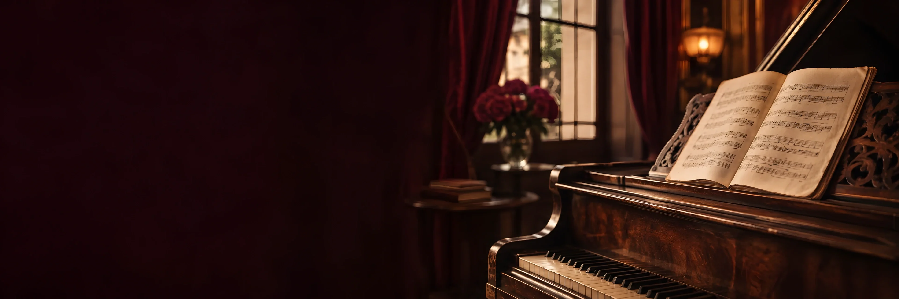

Classe 1
Origen de la tècnica vocal
Una breu ressenya de com va néixer Mi técnica vocal paso a paso.

Sèrie didàctica
«Detalls tecnicovocals d’interès per a l’estudiant, el professor o l’intèrpret. Tot un treball de recerca en un resum senzill i didàctic.» Els vídeos són en castellà.
Uns 23 minuts en totalSèrie publicada entre 2021 i 2023
Mi técnica vocal paso a paso
Fes clic en qualsevol classe per veure-la aquí mateix. Et recomanem seguir l’ordre: cada vídeo es recolza en l’anterior.
Classe 1
Una breu ressenya de com va néixer Mi técnica vocal paso a paso.
Classe 2
La definició de la qual parteix tot el mètode.
Classe 3
El que la tecnologia mèdica permet veure avui de la veu.
Classe 4
Com està construït un exercici i què s’hi observa.
Classe 5
Per què vocalitzar no és «escalfar», sinó tècnica aplicada.
Classe 6
L’acord amb què comença la vocalització i la seva funció.
Classe 7
Com intervenen en el so els músculs del rostre.
El llibre desenvolupa cada punt amb el seu DVD en 3D, i a classe la Carmen corregeix el teu gest en directe.
El llibreUna classe amb la CarmenEls vídeos es reprodueixen des de Vimeo i necessiten connexió a internet.
Presentació
Molt aviat, la Carmen presentarà aquí la seva feina i la seva manera d’ensenyar en un vídeo nou (en castellà).

La teva primera classe
Explica a la Carmen què vols cantar i què et costa. Et proposarà un punt de partida i un horari que encaixi amb tu, en línia o a Barcelona.